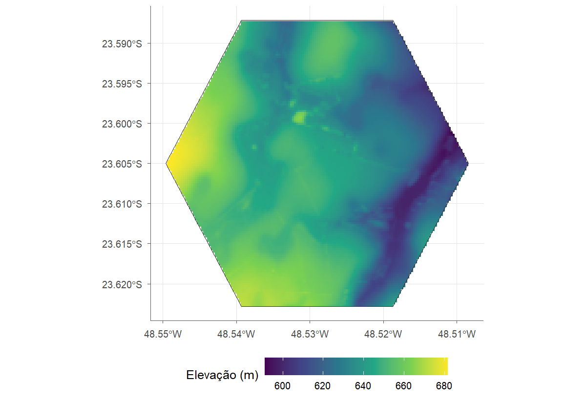
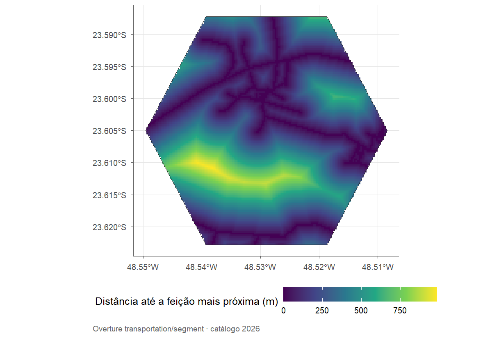

Capítulo 11 Camadas externas
As funções de camadas externas recebem o mesmo objeto de mapas e devolvem os resultados alinhados à mesma área, grade e sistema de coordenadas. Como dependem de servidores públicos, as figuras deste capítulo foram geradas uma vez e guardadas junto com o livro.
Relevo e vias na Lagoa do Sino
load_physical() traz a altitude, a declividade e a orientação do Copernicus
DEM, além de propriedades do solo do SoilGrids (argila, areia, silte, carbono,
pH e outras), já reamostradas para a grade dos mapas. Em conexões lentas, vale
ampliar o tempo limite, que por padrão é de 5 segundos:
relevo <- load_physical(mapas, layers = c("elevation", "slope"), timeout = 30)
relevo$plots$elevation
Figura 11.1: Altitude (Copernicus DEM, 30 m) na grade dos mapas da Lagoa do Sino.
load_features() busca feições no Overture Maps ou em extratos regionais do
OpenStreetMap, e feature_raster() as transforma em superfícies na grade da
análise: distância, contagem, comprimento, cobertura ou densidade.
vias <- load_features(mapas, "roads", source = "overture")
distancia <- feature_raster(vias, mapas, feature = "roads",
metrics = "distance")
distancia$plots$distance
Figura 11.2: Distância até a via mais próxima (Overture Maps) na Lagoa do Sino.
Para pontos de campo, distance_to_nearest() mede a distância geodésica até a
feição ou a classe de uso mais próxima. Quando o alvo é uma classe dos próprios
mapas, nem é preciso internet:
pontos <- data.frame(lon = c(-48.529, -48.515), lat = c(-23.605, -23.590))
ate_floresta <- distance_to_nearest(pontos, mapas, classes = 3)O centro do campus fica a 327 m da formação
florestal mais próxima, e o segundo ponto, a
847 m. A mesma função aceita as feições de
load_features(), como em distance_to_nearest(pontos, vias, feature = "roads").
Fora do Brasil: Liechtenstein
load_lulc() lê o ESA WorldCover (10 m, 2020 e 2021) em qualquer lugar do mundo
e devolve um objeto igual ao de load_rasters(). Um exemplo mínimo, perto de
Vaduz, em Liechtenstein:
area <- make_polygon(lat = 47.16, lon = 9.555, size = 2, shape = "circle")
cobertura <- load_lulc(area$polygon, years = 2021)
land_vis(cobertura, year = 2021)
Figura 11.3: Cobertura da terra (ESA WorldCover 2021) perto de Vaduz, Liechtenstein.
Como o formato é o mesmo, get_area(), class_diversity(), land_change() e
fragment_metrics() funcionam sem nenhuma mudança, agora com a legenda oficial
do WorldCover (dict_build("esa_worldcover")).